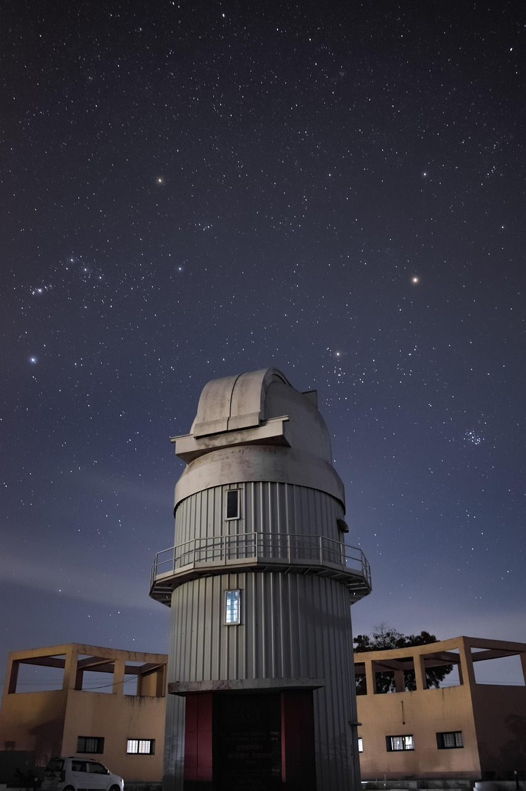

My-Favorites

أشيائي المفضلة
الفضاء
نبذة عني
طلال الشعبان حاصل على شهادة بكالوريوس بتخصص هندسة برمجيات ومحب لعلم الفلك
، وهواياتي العاب الفيديو
الاشياء التي افضلها :
- كرة القدم
- الشوكلاته
- البنفسجي الفاتح
- حائل
- رواية ابابيل
خططي المستقبلية
اكمال دراسة الماجستير في ادارة الاعمال
أهداف اريد تحقيقها مستقبلاً
- الحصول على شهادة اتمام معسكر جافاسكريت
- الحصول على شهادة soc
- بناء موقع portfolio